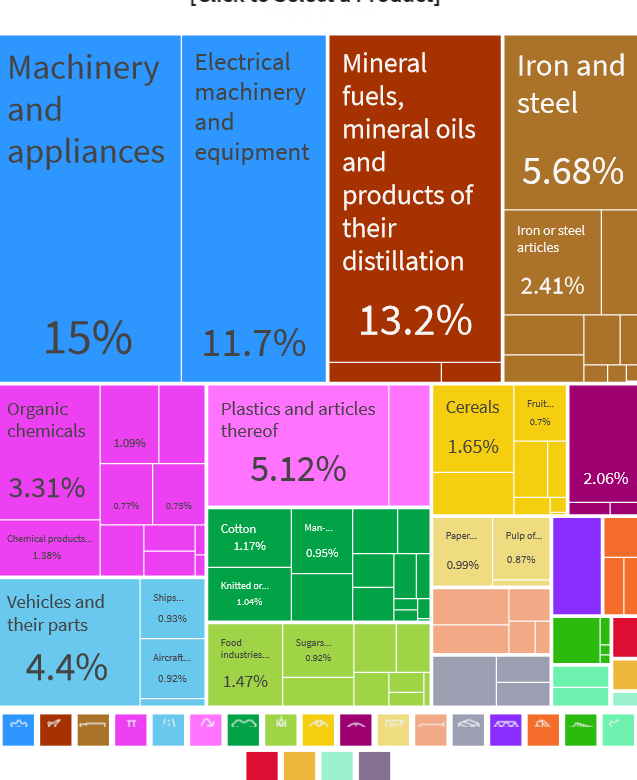

| production | consumption | production | consumption | Gains from trade | ||
|---|---|---|---|---|---|---|
| USA | textiles (ton) | 50 | 50 | 0 | 75.0 | +25 |
| USA | soybean (ton) | 50 | 50 | 100 | 62.5 | +12.5 |
| IDN | textiles (ton) | 100 | 100 | 200 | 125.0 | +25 |
| IDN | soybean (ton) | 25 | 25 | 0 | 37.5 | +12.5 |
Pertemuan 13
So far, we assume highly domestic market situation.
It is highly not realistic especially for Indonesia, a small(-ish) country where international economies matter:
Indonesia’s export jumps since the 1970s thanks to oil boom. Since then, Indonesia is generally running trade surplus.
The importance of trade is generally the same throughout.
source: OEM
Indonesia’s main exports are natural resources: minerals, coal, palm oil, wood products, rubber.
Also a bit on manufactures: iron and steel, vehicles, machine and electronics, food products.
 source: OEM
You might have seen the news about what Indonesia trades with the world:
We imports many food stuff: beef, rice, wheat, soybeans
We also export many plantation and natural resources such as CPO and coal.
But you might also hear that trade is like a competition: export is good, import is bad, and trade deficit means a country is “lost”.
Truthfully, it’s much more complex than that.
Generally, economists believe that international trade is better for both parties.
Comparative advantage is the reason why trade is good for both parties.
A country has a comparative advantage in producing a good or service if the opportunity cost of producing the good or service is lower for that country than for other countries.
This concept relies heavily on opportunity cost, that is, when a country produce good \(x\), it has to forgo resources capable of producing good \(y\)
Think of it like this: if you spent 2 hours studying for economics, that means you forgo 2 hours you could have spent studying statistics.
To understand this term better, we will use some simplified examples.
Suppose there are two economies, Indonesia and United States (US), and two goods, textiles and soybean.
Textiles and soybean requires different tech and labour / capital intensity.
What if the two countries do not trade?
| Produce | US opportunity cost | IDN opportunity cost |
|---|---|---|
| 1 ton of textiles | 1 ton of soybean | 250 kg of soybean |
| 1 ton of soybean | 1 ton of textiles | 4 ton of soybean |
in autarky
|
with trade
|
|||||
|---|---|---|---|---|---|---|
| production | consumption | production | consumption | Gains from trade | ||
| USA | textiles (ton) | 50 | 50 | 0 | 75.0 | +25 |
| USA | soybean (ton) | 50 | 50 | 100 | 62.5 | +12.5 |
| IDN | textiles (ton) | 100 | 100 | 200 | 125.0 | +25 |
| IDN | soybean (ton) | 25 | 25 | 0 | 37.5 | +12.5 |
By concentrating production on one good and then trade, you can see that both ended up better-off:
with autarky, total production {textiles,soybean} \(=\{150,75\}\)
consumption=production, and \(C_{USA} = \{50,50\},C_{IDN} = \{100,25\}\)
in autarky
|
with trade
|
|||||
|---|---|---|---|---|---|---|
| production | consumption | production | consumption | Gains from trade | ||
| USA | textiles (ton) | 50 | 50 | 0 | 75.0 | +25 |
| USA | soybean (ton) | 50 | 50 | 100 | 62.5 | +12.5 |
| IDN | textiles (ton) | 100 | 100 | 200 | 125.0 | +25 |
| IDN | soybean (ton) | 25 | 25 | 0 | 37.5 | +12.5 |
with trade, total production {textiles,soybean} \(=\{200,100\}\)
In reality, we will need country’s preferences to establish proper equilibrium quantity and prices.
In this model, we have no price. But from the opportunity cost, we can calculate the relative prices:
Since in Indonesia, it is comparatively cheaper to produce textile, it’s better for US to source its textile from Indonesia.
Differences in climate is the reason why we’re so good at producing CPO and rubber, but sucks at producing soybean and wheat.
Differences in Factor Endowment. Some countries are endowed with natural resource, some with cheap labour. Countries which has no both has to find something else, such as:
Differences in technology. Japan, South Korea and Taiwan are one good example. While technology can be transferred, opportunity cost of investing in high-tech things is more production of CPOs.
These days, trade have been moving to an even more extreme point. Hence hyperglobalization: countries rely on each other to produce one particular goods.
The main enabler is advances in communications:
Countries able to specialize not only in a production of particular goods, but a particular process of production.
This is called Global Value Chain (GVC)
Many products these days do not made by just 1 country
image
source: World Bank
Many products these days do not made by just 1 country
image
GVC allows for a country that has very low technological prowess become one of the dominant exporter of high-tech goods like smartphone and laptops.
In GVC situation, trade policy becomes very important: a poorly designed trade policy will leads to zero production in both.
Imagine if Indonesia has to build its own semiconductor fab in order to produce a smartphone.
Indonesia also able to export textiles in varying qualities of raw materials.
With trade, the soybean market is exposed to a lower world price \(P_W\)
at \(P_W\), demand increases \(Q_A \rightarrow Q_D\), while supply reduces \(Q_A \rightarrow Q_S\)
This imbalance is solved via imports. Domestically produced soybean is \(Q_S\), while imported soybean is \(Q_D-Q_S\)
In autarky:
In trade:
CS is much higher, and trade gains area Z in total.
However, domestic soybean producer lose area X.
With trade, the soybean market is exposed to a higher world price \(P_W\)
at \(P_W\), demand reduces \(Q_A \rightarrow Q_D\), while supply increases \(Q_A \rightarrow Q_S\)
This imbalance is solved via exports. Domestically consumed soybean is \(Q_D\), while imported soybean is \(Q_S-Q_D\)
In autarky:
In trade:
PS is much higher, and trade gains area Z in total which goes to producer.
However, domestic soybean producer lose area X.
Trade benefits exporting industries while hurting import competing industries.
Factor of productions used for export sectors will have high demand, and priced highly:
If factors can’t easily move, it will leads to inequality.
When the government impose tariff, the import price become more expensive. Local producer doesn’t experience tariff so they become more competitive.
Domestic parket becomes world price + tariff
This push demand down to \(Q_{DT}\) and increase domestic supply to \(Q_{ST}\)
Imports are lower \(Q_{DT}-Q_{ST}\)
When the government impose quota restriction at \(Q_{DT}\), the effect is similar.
buyers want to buy up to \(Q_D\) but cannot.
This push price up to \(P_T\).
Tariff leads to lower imports, and more domestically produced goods.
In total, CS lost A+B+C+D
PS gains = A
Government gets tariff revenue, which is number of imports \(\times\) per-unit tariff, which is C
B+D is DWL.
in case of quota, B goes to quota rent.
When quota rent is sold with a competitive auction, the rent can go to government, and thus have the same effect as tariff.
However, when appointed quota is not transparent this can lead to a corruption.
In conclusion, trade is generally good for everyone
Unfortunately, the gain from trade is not shared equally, and could potentially lead to higher inequality.
Trade creates winners and losers, and the battle between winners and losers determine trade policy.
Next week we will see how international capital plays out.
The role of exchange rate
Balance of Payment.